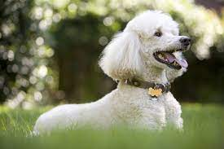

Overview
Whether Standard, Miniature, or Toy, and either black, white, or apricot, the Poodle stands proudly among dogdom's true aristocrats. Beneath the curly, low-allergen coat is an elegant athlete and companion for all reasons and seasons. Poodles come in three size varieties: Standards should be more than 15 inches tall at the shoulder; Miniatures are 15 inches or under; Toys stand no more than 10 inches. All three varieties have the same build and proportions. At dog shows, Poodles are usually seen in the elaborate Continental clip. Most pet owners prefer the simpler Sporting clip, in which the coat is shorn to follow the outline of the squarely built, smoothly muscled body. Forget any preconceived notions about Poodles you may have: Poodles are eager, athletic, and wickedly smart dogs of remarkable versatility. The Standard, with his greater size and strength, is the best all-around athlete of the family, but all Poodles can be trained with great success.he Poodle, called the Pudel in German and the Caniche in French, is a breed of water dog. The breed is divided into four varieties based on size, the Standard Poodle, Medium Poodle, Miniature Poodle and Toy Poodle, although the Medium Poodle is not universally recognised.The Poodle likely originated in Germany, although the Fédération Cynologique Internationale (FCI) and a minority of cynologists believe it originated in France. Similar dogs date back to at least the 17th century. Larger Poodles were originally used by wildfowl hunters to retrieve game from water, while smaller varieties were once commonly used as circus performers.
Characteristics
- Friendly and tolerant nature
- Intelligent and trainable
- Golden coat varying in shades
- Energetic and playful
Care
The coat of a Poodle, although requiring more grooming than most other breeds, is particularly advantageous for people with allergies. Best of all, carpets, furniture and clothes will remain hairless and odour free. A balanced diet, regular exercise and routine are needed.A balanced diet, regular exercise and routine are needed. Every dog must be house-trained, obedient and easy to manage. Love is the most important requirement of all. In return, you will be rewarded with love, loyalty and protection from your Poodle, regardless of its size. Ideal ownersPoodles require ample daily exercise and mental stimulation to keep them happy and healthy. They also need consistent training and are typically adept at picking up new skills. Plus, their curly coat needs a fair amount of grooming attention.All sizes of poodle have a high energy level, along with high mental stimulation needs. They need at least an hour of exercise per day. Brisk walks, jogging, hiking, and swimming all are great options to give them exercise. And as retrievers, they love a game of fetch. Plus, they excel in dog sports, such as agility, which also can challenge them mentally. The coarse, curly, low-shedding, single-layer coat of a poodle grows continuously. It needs regular haircuts to keep it looking its best. Most owners keep the coat short for easier maintenance. You can either learn how to trim it at home or take your poodle to a groomer roughly every four to six weeks.